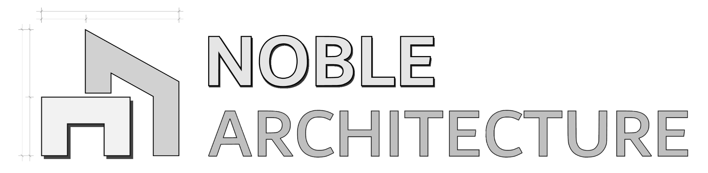

The LAS file is only ever read, never changed.
What units are this file's coordinates in?
The most points drawn at once. Raise it for more detail.
Size, opacity and colour belong to the cloud named above, so each cloud can look different. Choose another cloud in the bar at the top to set it up. The point budget is shared.
Edit Clip Box shows the box in the model so you can move its sides with the mouse.
Limits are in the model's units. Type a value and press Enter. Clipping only hides points; the LAS is never changed.
A clip scene remembers this cloud's clip box. Click a name to switch to it. Drag a scene by its grip to reorder the list. Clip scenes are saved in this SketchUp model, with the cloud they belong to.
The gimbal point sits at:
Rotation
Type a value and press Enter. X, Y and Z place the gimbal point (and the cloud with it) in the model's units; rotations are in degrees and turn the cloud about the gimbal point. The cloud is only ever moved and rotated, never scaled.
Rotate also snaps to model geometry (endpoints, edges, axes), so you can line the cloud up with lines you have drawn.
Saves every point cloud of the model to one JSON file, each in its own section: file, units, position, rotation, lock, clip box, clip scenes and look, with the point cloud scenes. No point data.
The preview cleans the points inside the clip box, reading a margin around it so the result is exactly what the export gives for those points. Clean & Export always cleans the whole cloud.
Cleans the whole of the cloud this tab works on with the settings above and saves it as a NEW LAS file that you name. The original LAS is never changed, renamed or replaced, and nothing is ever overwritten. The new file is checked point by point, then loaded in the same position and used by this model.
Lengths in these settings are millimetres. The cloud's own unit, chosen when it was imported, converts them; nothing is guessed. SketchUp's Undo can switch the model back to the earlier file but never deletes a file.
Removes points for good, into a new LAS file. Fit the clip box round an area, then Remove Outside crops the cloud to it, or Remove Inside cuts it out: a tree, a car, a clump of noise. Add as many Cut boxes as you need.
Saves the cloud without those points as a NEW LAS file that you name, checks it point by point, then loads it in the same position and uses it in this model. The original LAS is never changed, renamed or replaced. Only the boxes decide (no point is analysed or moved), so this takes seconds, not minutes: crop first, then Clean & Export the smaller cloud. Like the clip box, the boxes stay level with the model.
Press a scene to go to it: SketchUp shows that scene, and every point cloud takes back whether it is shown, its size, opacity, colour and clip box, with the point budget. A cloud added after the scene was saved stays hidden there until you update the scene. Drag a scene by its grip to reorder the list.
Go to the SketchUp scene, set the clouds up for it (which are shown, each one's clip box, size, opacity and colour, the budget), then pick the scene here and press Save Settings For Scene.
These settings live in the viewer's own record in this model. SketchUp's scenes are never changed: the viewer finds each one by the permanent id SketchUp gives it, so renaming, reordering or updating a scene never breaks anything. If a scene is deleted, its settings show as Missing until you relink or remove them.
Reload runs every Ruby file again and reopens this window, so code, layout, style and default-config changes apply without restarting SketchUp.
| Ruby modules | Reloaded |
| HTML, CSS and JS | Reloaded (window reopens) |
| Default config JSON | Read again |
| Native renderer (DLL) | Swapped in if rebuilt; re-import the LAS afterwards |
The model keeps one small text record per point cloud (its name and colour, which LAS it uses, where it sits with its rotation, gimbal point and lock, its clip box and clip scenes), a list of the clouds in order, and the point cloud scenes, which hold each cloud's settings by its id. They never load anything by themselves and never stop a model from opening; use Reload on the View tab. A copy of the same records is kept on this computer, so a day's alignment survives SketchUp closing without saving.
Working files for this plugin, on this computer only. Each imported LAS gets one point cache, so Reload Point Cloud takes about a second instead of reading the whole LAS. Everything here can be deleted and rebuilds from the original LAS.
Preferences on this computer, such as the last tab and the last LAS folder.
Details behind any message in the status bar, newest first.
LAS reading: LASzip 3.5.0 (Apache 2.0), included with the plugin.